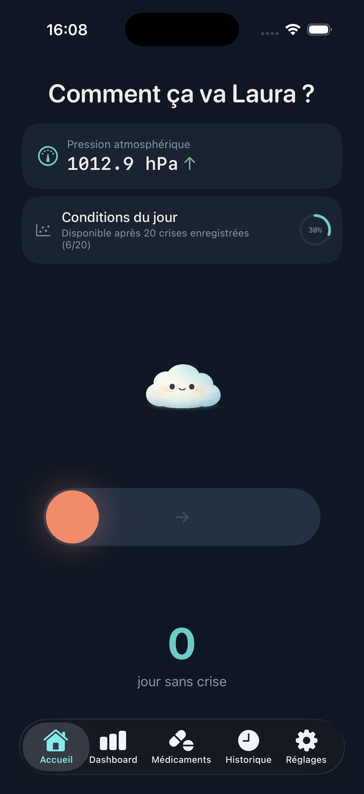
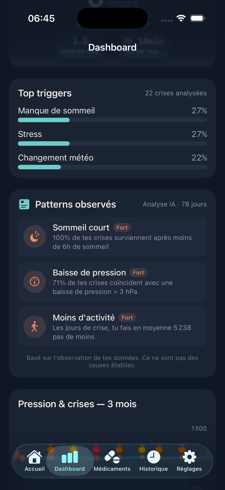
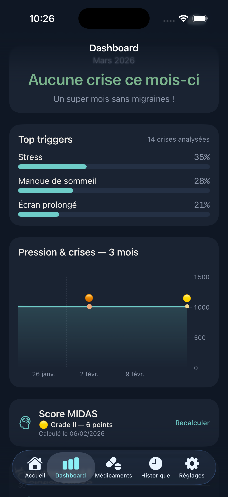
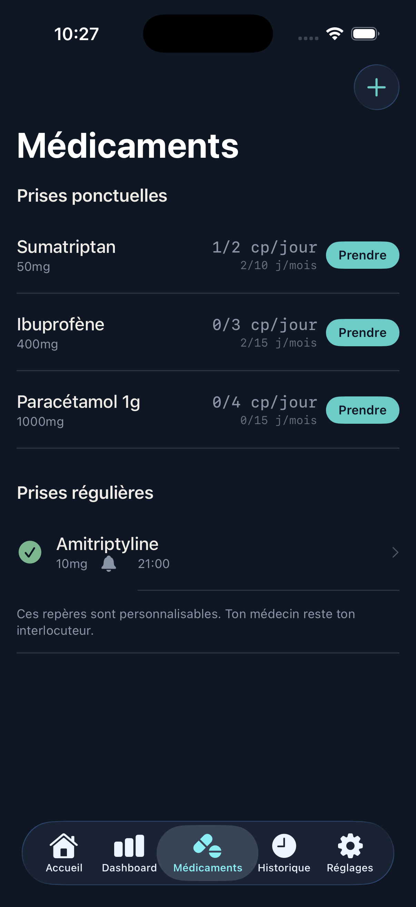
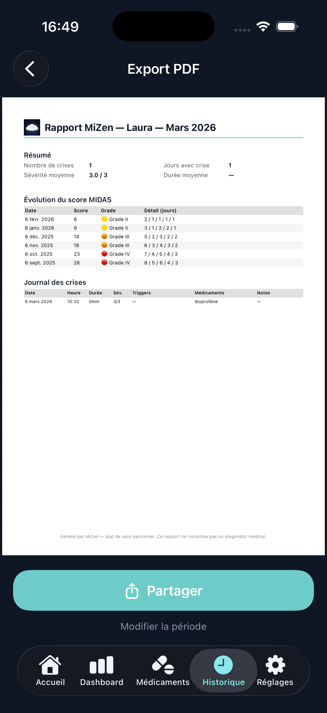

MiZen observe tes habitudes, identifie tes patterns et évalue tes conditions du jour — grâce à une IA personnelle qui tourne sur ton iPhone, jamais sur un serveur.
Télécharger sur l'App Store Suivre @mizenhealth
Comment ça marche
Pas de questionnaire interminable. Tu complètes les détails quand tu vas mieux.
Un seul geste pour enregistrer ta migraine et son intensité.
MiZen croise tes données Apple Santé avec tes migraines. Patterns, déclencheurs, pression — l'IA fait émerger ce qui compte.
Génère un rapport d'une page, clair et synthétique. Prêt pour ton rendez-vous.
IA personnelle
Au fil du temps, MiZen croise tes habitudes avec tes migraines pour faire émerger ce qui compte. Tout se passe sur ton iPhone.

MiZen connecte Apple Santé et analyse ton sommeil, ton activité et ta fréquence cardiaque. Avec le temps, des patterns émergent.
MiZen observe et te montre des tendances. Ce ne sont pas des causes établies ni un avis médical. Parles-en toujours à ton médecin.
Découvre l'app
Trois écrans qui changent ta façon de gérer tes migraines.

Tes déclencheurs, la pression atmosphérique et ton score MIDAS en un coup d'œil.

Suis tes prises jour par jour. MiZen t'alerte quand tu dépasses les repères.

Un PDF d'une page, clair et complet. Prêt à partager avant ton rendez-vous.
Fonctionnalités
MiZen croise tes données Apple Santé avec tes migraines et fait émerger des tendances : sommeil, pression, activité. Des observations, pas des certitudes.
Chaque matin, MiZen évalue tes conditions en croisant tes données récentes. Un indicateur simple pour te situer — à toi de voir ce que tu en fais.
Choisis l'intensité et c'est noté. Pas de formulaire, pas de question. Tu complètes après si tu veux.
Fréquence, intensité, facteurs déclencheurs, calendrier visuel. Tout ce qui compte, en un coup d'œil.
Suivi en temps réel intégré. Beaucoup de migraineux y sont sensibles — MiZen t'aide à faire le lien.
Note tes prises au fil des jours. MiZen t'alerte quand tes prises dépassent les repères habituels — pour en parler avec ton médecin.
Un document d'une page, clair et synthétique. Prêt à partager avant ton rendez-vous.
Questionnaire reconnu en neurologie pour mesurer l'impact des migraines sur ton quotidien.
Vie privée
MiZen n'a pas de serveur. Tes données de santé et l'IA qui les analyse restent sur ton iPhone et dans ton iCloud privé. On n'y a jamais accès.
Premium
La saisie des crises, le tableau de bord, le suivi des médicaments et le questionnaire MIDAS sont gratuits. Le premium débloque l'IA et les outils avancés.
Gratuit pour toujours : saisie des crises, tableau de bord, suivi des médicaments, alertes médicaments, questionnaire MIDAS.
Télécharge MiZen gratuitement et commence à mieux comprendre tes migraines.
Télécharger sur l'App StoreSuis-nous sur Instagram pour ne pas rater le lancement.
Suivre @mizenhealthQuestions fréquentes
MiZen te permet de signaler une migraine en un seul geste. L'app enregistre automatiquement la pression atmosphérique et te propose d'ajouter tes facteurs déclencheurs, symptômes et médicaments. Une IA personnelle analyse tes données Apple Santé pour faire émerger des patterns et évaluer tes conditions du jour. Un tableau de bord mensuel te montre la fréquence, l'intensité et les déclencheurs de tes migraines.
MiZen connecte Apple Santé (avec ton accord) et lit tes données de sommeil, d'activité et de fréquence cardiaque. Au fil du temps, l'app croise ces données avec tes migraines pour faire émerger des patterns — par exemple, un lien entre nuits courtes et crises. Chaque matin, elle évalue tes conditions du jour. Tout ce calcul se fait sur ton iPhone, rien n'est envoyé à un serveur. Ce sont des observations statistiques, pas un diagnostic médical.
MiZen n'a aucun serveur. Toutes tes données — y compris celles analysées par l'IA — restent sur ton iPhone et dans ton iCloud privé. Holen Apps n'y a jamais accès. Zéro collecte, zéro pub, zéro pistage.
Oui. MiZen note tes prises au fil des jours et t'alerte quand la fréquence dépasse les repères habituels. Tu peux en parler avec ton médecin en toute connaissance de cause, rapport à l'appui.
MiZen génère un rapport PDF d'une page avec l'historique de tes crises, médicaments et scores. Tu peux le partager par email ou AirDrop avant ton rendez-vous.
La saisie des crises, le tableau de bord, le suivi des médicaments avec alertes et le questionnaire MIDAS sont gratuits pour toujours. L'abonnement Premium (2,99€/mois ou 19,99€/an) débloque l'IA personnelle (patterns observés et conditions du jour), le rapport complet, les alertes pression atmosphérique, l'évolution du score MIDAS et le widget.
MiZen mise sur la simplicité radicale : un geste pour signaler une migraine, pas un questionnaire de 30 questions. Tes données restent sur ton iPhone (pas sur un serveur externe), et l'app inclut une IA personnelle qui identifie tes patterns, le suivi de la pression atmosphérique en temps réel et des alertes sur les prises de médicaments.
Oui. MiZen intègre une IA personnelle qui analyse tes données de santé (sommeil, activité, fréquence cardiaque via Apple Santé) et les croise avec tes migraines. L'IA identifie des patterns — par exemple, un lien récurrent entre nuits courtes et migraines — et évalue tes conditions chaque matin. Tout le traitement se fait directement sur ton iPhone, sans aucun envoi de données à un serveur.
Non. MiZen est un journal personnel de suivi, pas un dispositif médical. L'IA observe tes données et te montre des tendances statistiques — ce ne sont ni des diagnostics, ni des recommandations thérapeutiques. Ces observations peuvent t'aider à mieux préparer tes rendez-vous médicaux, mais elles ne remplacent jamais l'avis de ton médecin.